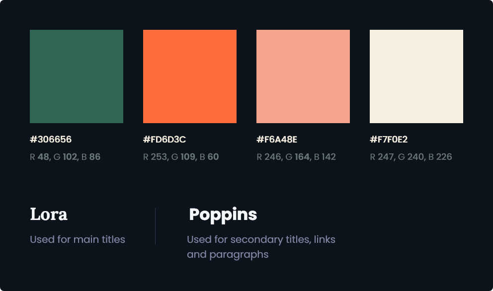
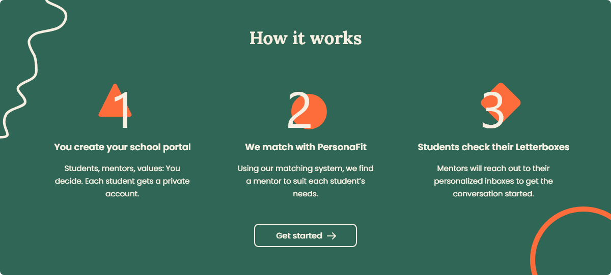
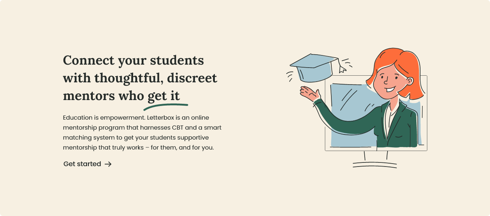
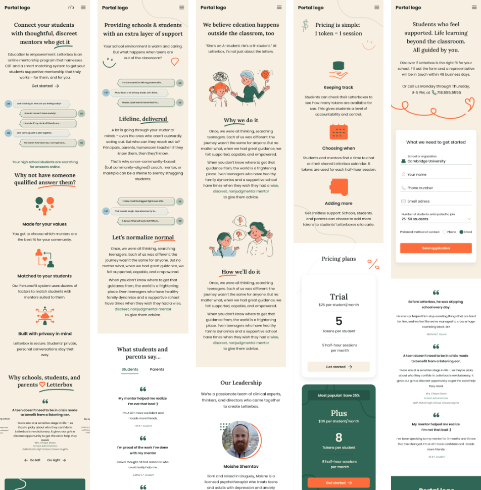
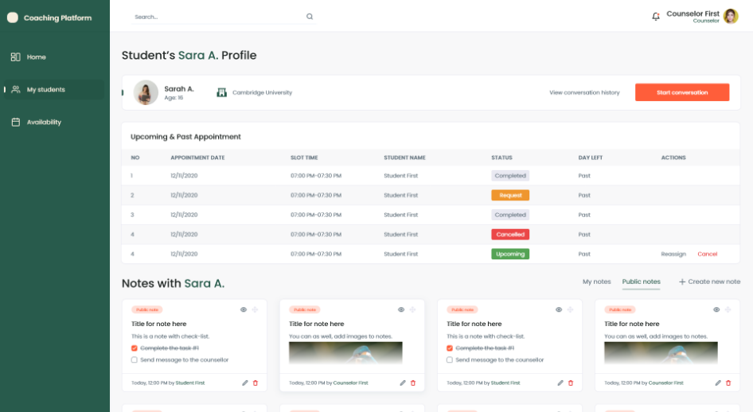

Rb
.Rb
.Front-end desktop and mobile UI design, back-end portal UI design.
The client
Project duration
Collaboration
Technologies used
My roles
View it live
01. Problem & Main task
Nowadays, many students struggle with mental health problems, are being bullied, not accepted by others, and offended in other ways. Unfortunately, many schools do not provide the necessary tools to deal with these situations and students are left dealing with the problem themselves. Student mentorship portal (fictive name) is meant to provide students with thoughtful and discreet mentors, who get it.
02. Look & Feel
Creating a color palette and choosing a font family that fit was an important step as these two design elements play a big part in defining the overall feeling of the website.
To form a calm and safe-space feeling, the chosen colors were green, beige and orange, where green reflects hope, beige – trust and orange – optimism and energy. Beige was mostly used as background color for the website, to maintain a warm feeling over the website and encourage students to trust the portal and their mentors. Orange color was used for CTA buttons, to make students feel optimistic about making the important steps towards talking to mentors. To create a better visual hierarchy, green was used in illustrations, icons and multiple section backgrounds.
To emphasize trust and safe feeling even more, I collaborated with an illustration designer who designed illustrations that fit together with the interface and trigger positive emotions in the users. The illustrations were designed in a hand drawn manner, curvy and non-perfect lines, and colors.
Throughout the website, I designed different shapes and design elements to make the design more playful and appealing, which, again was done to make the portal look safe, encouraging, and optimistic. The icons, illustrations and other UI elements have round corners, to prevent emphasizing danger and lack of safety, which are the characteristics for the opposite – sharp corners and shapes.
 03. Collaboration & Iterations
Even though the UX design was based on basic wireframes that I was provided with from the project manager, there were many changes needed during the process. During the one-and-a-half-week speed run, I constantly shared the progress with the project manager and received feedback from him as well as the project owners. Working agile helped me to explore most of my ideas and allowed me to take steps back if needed. The design was iterated multiple times, until the project owner and manager were satisfied with the result, which afterwards was prepared and sent to the developers.
04. Front-end design
As I mentioned before, the main goal was to make students in need feel safe and full of hope. These requirements were kept in mind throughout the whole design process, which lead me to making multiple design choices.
I chose to give the design quite a lot of whitespace, to allow the content to breathe and allow users to easily interact with the website without being overwhelmed by other content.
Illustrations, icons and were frequently used around the website, made specifically to talk and encourage users, as well as to give friendly feeling.
Cards, step by step explanations, testimonials, and other design patterns were used in the design to ensure that the user doesn’t have to spend much time getting familiar with the content.
For the front-end solution, I also designed the mobile version, which was designed after the desktop version, while removing some unnecessary elements that would make the design clustered because of the small screen size. Also, most of the content was centered, to ease navigating between content. On some occasions, the CTA buttons or clickable areas were made bigger, to ensure accidental errors like pressing the wrong button.
05. Back-end design
After designing the front-end portal and being completely familiar with how the portal works, I designed the back-end portal, which purpose was to create meetings, chat with mentors, view meeting calendar and more. The portal design consisted of many design patterns like cards, calendar, pop-ups, tables and more. The overall design remained the same as in front-end solution, with some minor changes and adjustments.
06. Final product
After finishing the designs for all the platforms, I re-checked the components and exported them for the developers. Overall, this is one of my favorite UI projects regarding the process, meaning of the project and the final result itself.
Get in touch with me through Email, connect with me on Linkedin, or check out my social media - Instagram, Dribbble, Behance